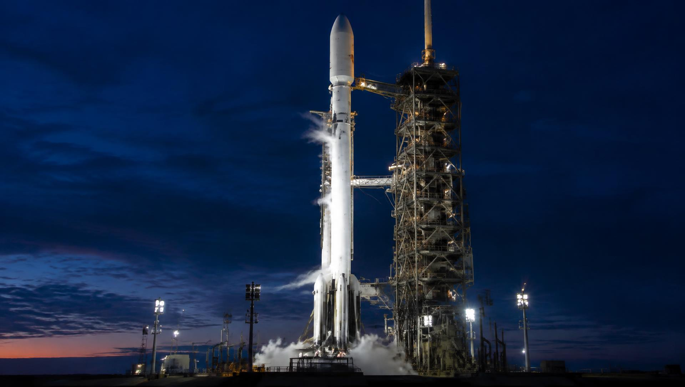
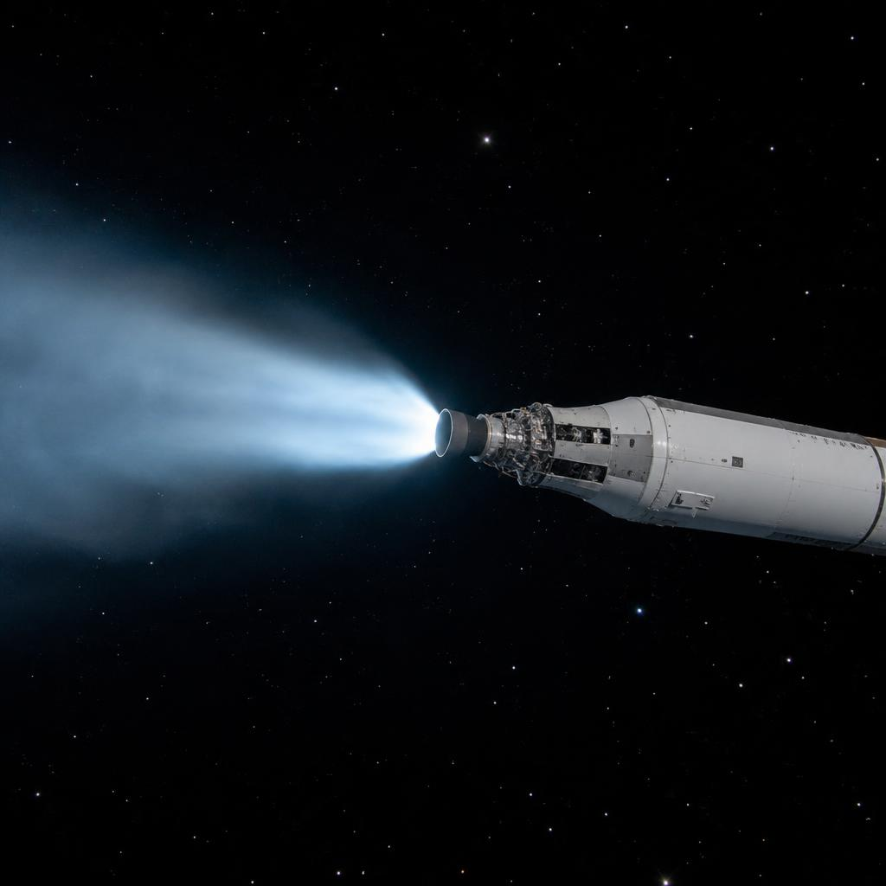
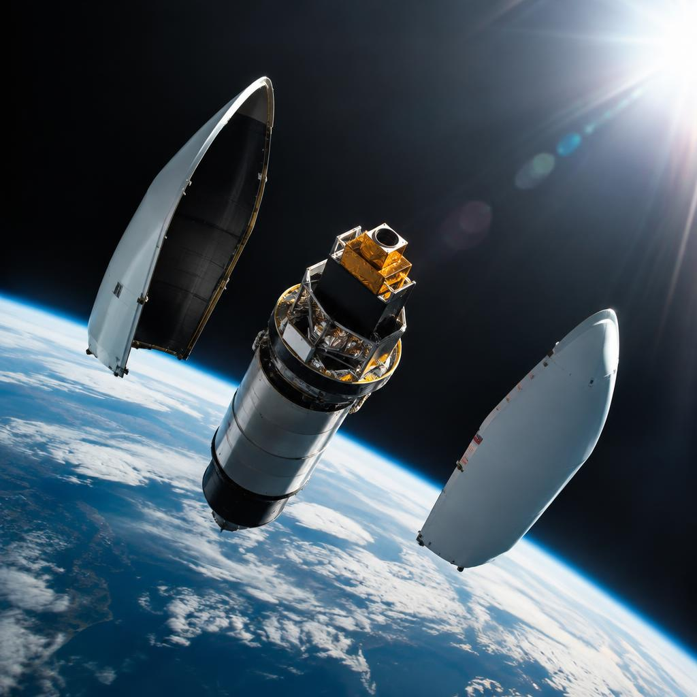

Vehicle · OrbitX One
OrbitX One
The world's first orbital-class rocket capable of reflight. It has flown, landed and reflown more than any other vehicle in the fleet.

Stage 1 — nine engines and a single job
OrbitX One's first stage does one thing: get the whole rocket moving fast enough that a much smaller machine can finish the job. At its base sit nine VX-9 engines burning rocket-grade kerosene (RP-1) and liquid oxygen, together producing 7,600 kilonewtons of thrust at liftoff.
Each engine is mounted on a hydraulic gimbal. To steer, the flight computer tilts the engines a few degrees in the direction it wants the rocket to go — there are no wings and no fins doing the work during ascent. If an engine shuts down mid-flight, the computer rebalances the remaining eight and the mission continues.
The first stage burns for about 162 seconds. By the time it shuts down, the vehicle is moving at roughly 8,000 km/h at an altitude of about 70 km.

Stage 2 — finishing the job
Three seconds after the first stage shuts down, pyrotechnics push the stages apart and the second stage's single vacuum-optimised VX-9V engine ignites. It burns liquid oxygen and RP-1 through an expansion nozzle more than twice the size of the first-stage engines — in the near-vacuum of space, a wide nozzle converts exhaust into thrust far more efficiently.
The second stage carries almost all of the vehicle's remaining propellant, because its job is speed: it fires for about six minutes, raising the low point of the trajectory above the atmosphere so the payload stays in orbit instead of falling back. It can also restart in flight to fine-tune the final orbit or deorbit itself at the end of the mission.

The fairing — a clamshell for cargo
Riding a rocket is violent: at maximum aerodynamic pressure the payload is battered by vibration, dynamic pressure and acoustic load. The fairing is the payload's shield — two carbon-fibre halves bolted together around the spacecraft for the roughest minute of ascent.
Around three minutes into flight, past most of the atmosphere, the fairing splits like a clamshell and falls away. Dropping it lets the second stage carry less dead mass into orbit. Descent capsules slow the halves through reentry, they splash down under steerable parachutes, and a recovery ship lifts them for refurbishment and the next flight.

Coming back — grid fins and a landing burn
Landing begins while the first stage is still pushing the rocket skyward. Minutes after separation, the stage flips end-over-end with a cold-gas thruster system and fires three of its nine engines in a boostback burn, throwing itself toward a landing zone — either a concrete pad or an autonomous droneship stationed downrange.
Four hypersonic grid fins — titanium lattices that unfold from the interstage — take over. They steer the falling, engine-first stage aerodynamically with centimetre-level precision, correcting course hundreds of times during descent. An entry burn slows the stage through the thickest air, then guidance solves a final targeting problem: line up the landing pad, kill the remaining velocity, and touch down on four landing legs at walking speed.
A landed first stage is not a trophy — it is a rocket we can fly again. Boosters in the fleet have flown more than twenty missions each.

Why it matters
In a traditional rocket, the most expensive hardware — engines, avionics, tanks — is used for minutes and then dropped into the ocean. Reusing the first stage spreads its cost across dozens of flights, which is what makes launch schedules and prices like ours possible.
Next: OrbitX Heavy